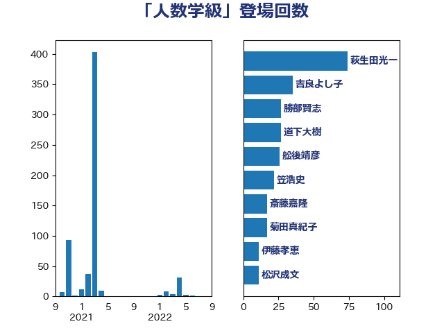

単語「人数学級」

| 萩生田光一 | 自由民主党 | 74 回 |
| 吉良よし子 | 日本共産党 | 35 回 |
| 勝部賢志 | 立憲民主党 | 27 回 |
| 道下大樹 | 立憲民主党 | 27 回 |
| 舩後靖彦 | れいわ新選組 | 26 回 |
| 笠浩史 | 無所属 | 22 回 |
| 斎藤嘉隆 | 立憲民主党 | 17 回 |
| 菊田真紀子 | 立憲民主党 | 17 回 |
| 伊藤孝恵 | 国民民主党 | 11 回 |
| 松沢成文 | 日本維新の会 | 11 回 |
| 佐々木さやか | 公明党 | 10 回 |
| 古屋範子 | 公明党 | 10 回 |
| 吉川元 | 立憲民主党 | 10 回 |
| 大石あきこ | れいわ新選組 | 10 回 |
| 吉良州司 | 無所属 | 9 回 |
| 根本幸典 | 自由民主党 | 9 回 |
| 赤池誠章 | 自由民主党 | 8 回 |
| 梅村みずほ | 日本維新の会 | 7 回 |
| 藤田文武 | 日本維新の会 | 5 回 |
| 西村康稔 | 自由民主党 | 5 回 |
| 大串正樹 | 自由民主党 | 4 回 |
| 湯原俊二 | 立憲民主党 | 4 回 |
| 丹羽秀樹 | 自由民主党 | 3 回 |
| 堤かなめ | 立憲民主党 | 3 回 |
| 柴山昌彦 | 自由民主党 | 3 回 |
| 水岡俊一 | 立憲民主党 | 3 回 |
| 河野義博 | 公明党 | 3 回 |
| 玉木雄一郎 | 国民民主党 | 3 回 |
| 田野瀬太道 | 無所属 | 3 回 |
| 菅義偉 | 自由民主党 | 3 回 |
| 谷田川元 | 立憲民主党 | 3 回 |
| 中川正春 | 立憲民主党 | 2 回 |
| 宮本岳志 | 日本共産党 | 2 回 |
| 山口那津男 | 公明党 | 2 回 |
| 末松信介 | 自由民主党 | 2 回 |
| 浮島智子 | 公明党 | 2 回 |
| 渡辺猛之 | 自由民主党 | 2 回 |
| 石井啓一 | 公明党 | 2 回 |
| 石川昭政 | 自由民主党 | 2 回 |
| 西岡秀子 | 国民民主党 | 2 回 |
| 上野通子 | 自由民主党 | 1 回 |
| 下村博文 | 自由民主党 | 1 回 |
| 太田房江 | 自由民主党 | 1 回 |
| 宮本徹 | 日本共産党 | 1 回 |
| 後藤祐一 | 立憲民主党 | 1 回 |
| 本村伸子 | 日本共産党 | 1 回 |
| 村井英樹 | 自由民主党 | 1 回 |
| 枝野幸男 | 立憲民主党 | 1 回 |
| 櫛渕万里 | れいわ新選組 | 1 回 |
| 泉健太 | 立憲民主党 | 1 回 |
| 牧島かれん | 自由民主党 | 1 回 |
| 船橋利実 | 自由民主党 | 1 回 |
| 赤澤亮正 | 自由民主党 | 1 回 |
| 阿部司 | 日本維新の会 | 1 回 |